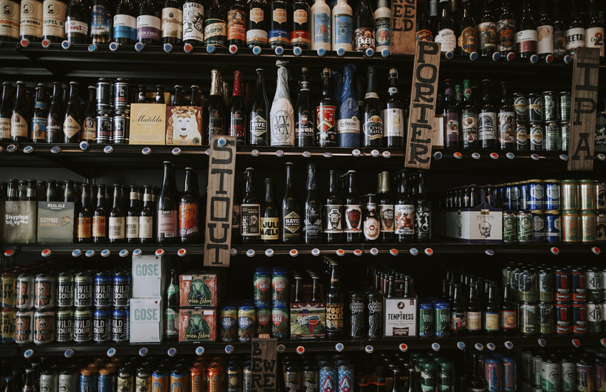
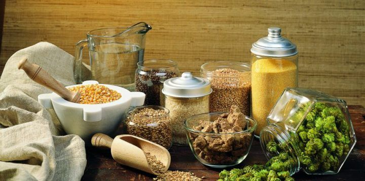
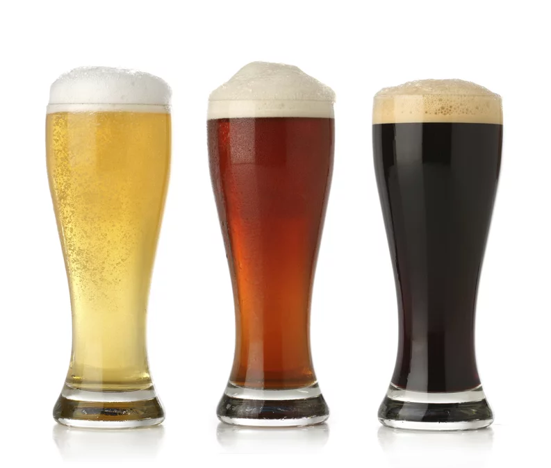

Bibliografía de imagenes y enlaces.
Cabecera:
- Nombre de la web: NeoDrinks.
- Articulo: 5 variedades de cerveza novedosas para brindar por el 2020.
- Url: neodrinks.com/variedades-de-cerveza/

Página de Portada:
- Nombre de la web: La roussecocina.
- Articulo: ¿La cerveza se toma fría?
- Url: laroussecocina.mx/nota/la-cerveza-se-toma-helada-3/

Página de Categoría:
- Nombre de la web: Wikipedia.
- Articulo: Cerveza.
- Url: es.wikipedia.org/wiki/Cerveza
- Nombre de la web: Wikipedia.
- Articulo: Cerveza.
- Url: es.wikipedia.org/wiki/Cerveza
.jpg)
- Nombre de la web: Webconsultas.
- Articulo: La cerveza, ¿es saludable?
- Url: www.webconsultas.com/dieta-y-nutricion/alimentos-saludables/componentes-de-la-cerveza

Páginas de detalles:
- Pagina de detalle: Ingredientes.
- Nombre de la web: Hacer Cerveza Artesanal.
- Articulo: Ingredientes de la cerveza artesanal.
- Url: hacercervezaartesanal.com/ingredientes-cerveza-artesanal

- Pagina de detalle: Aspecto.
- Nombre de la web: VIX.
- Articulo: Cómo servir una cerveza correctamente.
- Url: www.vix.com/es/imj/gourmet/2889/como-servir-una-cerveza-correctamente

- Pagina de detalle: Procedimiento.
- Nombre de la web: Viva la Chela.
- Articulo: Elaboración de cerveza.
- Url: vivalachela.mx/cultura-cervecera/basicos-de-la-cerveza/elaboracion-de-cerveza/

- Pagina de detalle: Procedencia o denominación de origen.
- Nombre de la web: Enigmatic.
- Articulo: Los 10 principales países productores de cerveza del mundo.
- Url: enigmaltic.com/datos-curiosos/los-10-principales-paises-productores-de-cerveza-del-mundo/
- Pagina de detalle: Graduación.
- Nombre de la web: Cerveza Grün Bauch (facebook).
- Articulo: Introducción de la cerveza.
- Fuente: Programa de Certificación CICERONE 2018.
- Url: facebook.com/cervezagrunbauch/posts/1591331937684983/